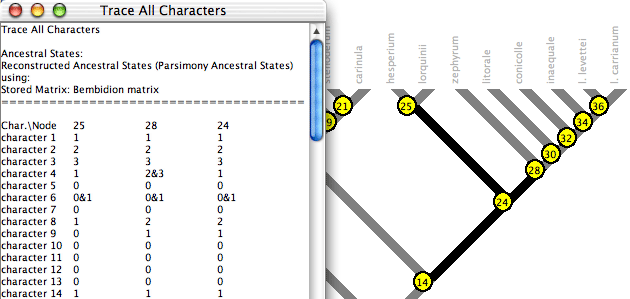
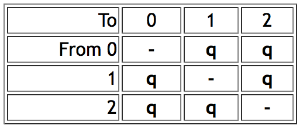
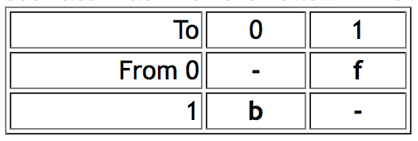
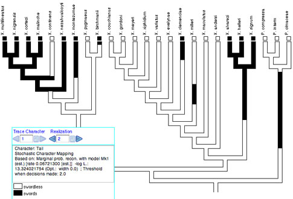

Studying the History of Character Evolution
With a phylogenetic tree and a distribution of character states in the observed (terminal) taxa, Mesquite can attempt to reconstruct the character states at ancestral nodes. Two separate issues to consider are the method by which the reconstruction is done, and how its results are displayed to the user. Mesquite currently can use either parsimony, likelihood or Bayesian methods to reconstruct ancestral states, and has several display methods, including "Trace Character History" which paints the branches of the tree to show the reconstruction.We recommend highly that you examine the example files provided in the folder "Ancestral State Examples". The minimal configuration to use with these examples is "Ancestral States" (indicate this configuration under File>Activate/Deactivate Packages>Choose Configuration), but you can also leave Mesquite in its default All Installed Modules mode.

Trace Character History
The Trace Character History facility graphically represents a history of character evolution on the tree. It is available under the Analysis:Tree menu of a tree window (e.g., the basic Tree Window, Dependent Tree Window, Mirror Tree Window, Multitree Window). If you select this you will probably be asked for a source of characters (e.g., stored characters) and areconstruction method (e.g., parsimony, likelihood, stochastic character mapping). (If you have "Use Stored Characters/Matrices by Default" turned on in the Defaults submenu if the File menu, Mesquite won't ask you and will simply use Stored Characters.) The tree will be painted to show ancestral states, and a trace legend will appear. The Trace Legend contains an important text area that gives details of the current ancestral state tracing. You can also see details of the reconstruction by switching the window to Text mode using the menu item Window>View Modes>Text.For categorical and molecular data, you can change the colors used in Trace Character by double clicking on the color rectangle in the Trace Legend. Revert to Default Colors is available in the Trace menu.
For parsimony reconstructions, any tree drawing style will suffice. For likelihood reconstructions, we recommend the Balls&Sticks style (Display menu, Tree Form) with Line Style "Square". This permits you to see the relative likelihoods and branch lengths. For stochastic character mapping, we recommend the Square Tree style in order to display the changes within a branch.
The Trace menu gives menu items to control the character history and its display. Some important ones are:
Character history source: Typically you may use Trace Character History to reconstruct the ancestral states of an observed character. Alternatively, you can trace a simulated history ("Simulate Ancestral States"). The reconstructed states need not be based on actual data, but could be based on simulated data. "Simulate Ancestral States" shows the "actual" history of character evolution branch by branch as it occured in the simulation, not as it was reconstructed, and thus may show ancestral states that would be unreconstructable, obliterated by subsequent changes.
Next, Previous, Choose Character History: Usually, this will allow you to choose which character to view. You can also scroll through characters using the blue arrows in the trace legend.
Trace Display Mode: With Trace>Trace Display Mode>Shade States and Trace>Trace Display Mode>Label States you choose whether to see the branches painted, or have the states indicated in labels. If painted, you can also ask that states be indicated by labels by choosing Trace>Label States.
You can also see details of the reconstruction at a node by holding the cursor over the branch. A description of the reconstructed states will appear at the bottom part of the Trace Character Legend. Another method is to use the Text view of the window (using the Window>View Modes>Text menu item) and scroll down — a text version of the trace should appear.
Reconstruction Method: For more details on reconstruction methods, see the sections on parsimony, likelihood, and stochastic character mapping.
Trace All Characters
Trace All Characters summarizes ancestral state reconstructions of many characters simultaneously. To request it, choose Choose (Tree Window)Analysis:Tree>Trace All Characters. A text window like that shown below will appear, listing the ancestral states reconstructed at each node for each character. Node numbers show up in red on the tree. (Alternatively, spots showing node numbers in the figure below can be turned on in the Tree Window's Display menu by selecting Show Node Numbers.)
By default only the selected nodes are listed. (Nodes can be selected using tools in the Tree Window.) You can request to show all nodes by turning off Show Selected Nodes Only in the Trace_All menu. By default all characters are listed; this can be changed using the Show Selected Characters Only menu item.
The ancestral state reconstruction can be controlled in the Trace_All menu of the tree window.
The table is either listed by characters or by nodes; you can switch from one to the other using the Rows are Characters menu item
Columns in the table in the text window may not appear perfectly aligned, but it is presented as a tab-delimited table, so you should be able to copy the text and paste it in to a text file to read in to your favorite spreadsheet program.
Trace Character Over Trees
The Trace Character Over Trees facility summarizes ancestral state reconstructions over a series of trees. This is useful to understand how ancestral state reconstructions vary over a series of trees, for instance if there is uncertainty in the tree. It works for categorical characters only. Also, Trace Character Over Trees does NOT calculate a consensus tree for you. As with all other analyses in the Tree Window, it works with the tree that is given to it by the Tree Window. If you want to make your summary on a consensus tree, then you need to put the consensus tree into the Tree Window first and then request Trace Character Over Trees.Choose (Tree Window)Analysis:Tree>Trace Character Over Trees. This examines a series of trees, and for each examines a character's ancestral states on that tree. For each node in the tree in the tree window, it attempts to summarize what ancestral states are reconstructed for that same clade in the series of trees (as long as the same clade exists in the other trees). For example, imagine the tree in the tree window includes the clade Tetrapoda. Each of the series of trees is examined, and if that tree includes the clade Tetrapoda, then its reconstructed ancestral states are examined. If the tree doesn't include Tetrapoda, then it is ignored for the sake of summarizing the tetrapod ancestral states. The tree in the tree window is then decorated to summarize what ancestral states are reconstructed for each of the clades.
Here is an example of Trace Character Over Trees in action:

The cursor is over a node (the most recent common ancestor of carinatum and coxendix), and thus the legend shows a summary. The node (i.e., the clade it represents) is present in only 445 of the 545 trees examined. For this reason, 100/545 or 18.3% of the pie chart for that node is shown in red, as the node is not present in that fraction of the trees. In addition, 100 of the trees with that node have an equivocal reconstruction at that node; those trees are shown in gray in the pie chart. Of the 345 trees with the node and an unequivocal reconstruction, 321 trees have "isodiametric" reconstructed at the node (shown in white), and in 24 trees have state "slightly trans." at that node (shown as a very thin sliver of green). In this example, "Count Trees with Uniquely Best States" is selected in the Calculate submenu of the Trace_Over_Trees menu. With this option a tree is counted as having a state at a node only if the state is the only optimal state. What is considered optimal depends on the reconstruction method. With parsimony, states are considered equally optimal if they are equally parsimonious. With likelihood, the Decision Threshold is used to decide whether states are good enough to be considered within the optimal set.
There are two alternatives to "Count Trees with Uniquely Best States". One is "Count All Trees with State". With this option for counting, a tree is counted as having a state at a node if the state is within the optimal set, whether or not there are other states within the optimal set. When the "Count All Trees with State" option is used, the sum of tree counts for the states at a node can more than the total number of trees with the clade, for a tree can get counted multiply at a node, under each state in an equivocal assignment. The other calculation option is "Average Frequencies Across Trees". This option is only available for reconstruction methods such as likelihood that yield a frequency or probability for each state at each node. The value presented for a node for a state is then the average frequency of that state across all of the trees possessing that node. All trees with the node are included in this calculation, even if the frequencies are very low.
An important option is what trees to examine. If the tree in the tree window is a consensus tree, then the trees examined might be the original set of most parsimonious trees that built the consensus. Trace Character Over Trees could then show how the ancestral state reconstruction varies among the most parsimonious trees. The trees examined might also be derived from a Bayesian analysis (perhaps subsampled using the Sample Trees from Separate File tree source), and the ancestral states obtained by likelihood, to do an analysis in Lutzoni's style. The trees might be random resolutions of an unresolved tree, or trees with random noise added to branch lengths, and so on. This would allow you to see how the results would vary if the tree changed. See the submenu Trace_Over_Trees>Tree Source for options.
Summarize State Changes Over Trees
The Summarize State Changes Over Trees facility summarizes ancestral state changes over a series of trees. To examine the changes over entire trees, choose Summarize State Changes Over Trees in the Taxa&Trees menu. To examine the changes just within one clade, select the single ancestral branch of that clade (not the entire clade) in a tree window, and choose Summarize Changes in Selected Clade in the Analysis:Tree menu. You will be asked to choose a reconstruction method, as well as the trees to examine. The State Changes window will appear, that displays a summary of the minimum, maximum, and average number of changes of each sort, across the trees. It also displays the fraction of trees that is reconstructed to have a particular number of each sort of change.
For reconstruction methods that allow for multiple mappings of character reconstruction for a character on a tree (multiple MPRs for parsimony reconstruction of unordered and ordered characters; stochastic character mapping), then for each tree, a number of mappings will be examined for each tree, with each mapping contributing 1/(number of mappings examined) to the frequency calculations. For MPRs, all MPRs will be examined up to a limit you set; if the limit you set is less than the number of MPRs, the MPRs will be randomly sampled from among the total. If the total number of MPRs for the whole tree exceeds 2 to the power 63, then Mesquite will not make the calculation, and will give you a warning. For stochastic character mapping, the number of mappings examined will need to be specified.
If you ask Mesquite to sample MPRs, then it will consider MPRs distinct if they differ anywhere in the entire tree. For example, imagine you ask Meqsuite to Summarize Changes in Selected Clade, and that there are only two MPRs within that clade, but there are other regions of the tree outside of that clade that show ambiguity in the most parsimonious reconstructions, yielding a total of not two but 1000 MPRs over the entire tree. Then, when Mesquite summarizes changes within the selected clade, it will consider the changes within that clade across all 1000 MPRs. Future versions of Mesquite will provide the option to only consider MPRs distinct if they differ within the clade of interest.
For reconstruction methods that do not allow for multiple mappings of character reconstructions, and instead use equivocal (e.g, states 0 or 1) to an ancestral node, for example parsimony for parsimony models other than unordered and ordered, or standard likelihood, then Mesquite examines the single (potentially ambiguous) reconstruction, and counts only unambiguous changes.
You can constrain the mappings examined by specifying changes to avoid, using the Allow Changes menu in the Summarize_Changes menu. If you deselect 0 to 1 changes in the dialog box, then any mapping that contain a 0 to 1 change will not be counted.
Parsimony Reconstruction Methods
Parsimony reconstruction methods find the ancestral states that minimize the number of steps of character change given the tree and observed character distribution. They can use different assumptions (models of evolution). For categoricalcharacters, the unordered states assumption is that one step is counted for any change. The ordered states assumption is that the number of steps from state i to state j is |i-j|. Thus, the number of steps from state 2 to state 5 is 3 steps. Astepmatrix explicitly specifies the number of steps from state to state by a matrix. Mesquite does not yet do parsimony calculations for irreversible, Dollo and character state tree assumptions, although these models are listed in menus and you can assign them to particular characters. For continuous characters, the linear cost assumption is that the cost of a change from state x to state y is |x-y|. The squared change assumption is that the cost of a change from state x to state y is (x-y) squared.Mesquite's parsimony calculations attempt to match MacClade's. Some differences remain in special cases of polymorphic terminal taxa with stepmatrices. Mesquite allows hard polytomies in the tree when stepmatrices are used.
Assigning a parsimony model: The parsimony model used for a character's calculations is the model assigned to it, if the character is one stored in in a matrix in a file. A parsimony model can be assigned in the List of Characters window. Select the row(s) corresponding to the desired character(s), and then touch on the column heading "Parsimony Model". A drop-down menu contains a submenu that allows you to select the models to apply. You can also change the parsimony model assigned to the character being traced in Trace Character History using the Parsimony Model submenu of the Trace menu. (Recall that Mesquite cannot yet do calculations with irreversible and Dollo models.)
If the characters used in parsimony reconstruction are not stored in a matrix but rather come directly from another source of characters such as simulations, a single parsimony model can be chosen to be applied to all of the characters coming from this source. Thus, for instance, when using Trace Character History, the Parsimony Model submenu of the Trace menu can be used to assign the model to be used.
Creating and editing stepmatrices: To create a stepmatrix, select Characters>New Character Model>Stepmatrix. A window will appear in which you can edit the cost of i to j transitions. The number of states allowed is initially 10 (0 through 9), but you can change the number of states under (Edit Stepmatrix)>Step_matrix>Set maximum state. The maximum number of states for a categorical character is 56; the maximum state value is therefore 55. This stepmatrix editor does not do triangle inequality checking (see discussion in manual of MacClade, which does check the triangle inequality).
Parsimony statistics: The parsimony calculations are used also for Treelength, Character Steps, Consistency Index, andRetention Index. These statistics are available in many places. For example, for the current tree in the tree window, go to Analysis:Tree>Values for Current Tree. To see the statistics for individual characters, you can prepare in the tree window the tree on which you want the statistics calculated, then go to the List of Characters window and choose Column>Number for Character>Character Value with current tree.... In the dialog box that appears choose the statistic you want. You can also access these calculations from the charts.
Most Parsimonious Reconstructions (MPRs): There are often multiple reconstructions of character evolution that entail the same number of steps, and are most parsimonious. These Most Parsimonious Reconstructions (MPRs) can now be individually examined for discretely valued characters (categorical, DNA, RNA, protein) if the parsimony model is unordered or ordered. With character history traced, then choosing "MPRs Mode" in the Trace menu will change the tracing to show only one MPR at a time. You can then examine other MPRs using the blue triangles next to "MPRs" in the Trace Legend. The number of MPRs can also be calculated using the "Number of MPRs" item in the Trace menu.
Likelihood Reconstruction Methods
Likelhood reconstruction methods find the ancestral states that maximize the probability the observed states would evolve under a stochastic model of evolution (Schluter et al., 1997; Pagel, 1999). The likelihood reconstruction finds, for each node, the state assignment that maximizes the probability of arriving at the observed states in the terminal taxa, given the model of evolution, and allowing the states at all other nodes to vary. (In fact, this considers all possible assignments to the other ancestral states.) This is equivalent to the marginal reconstruction of Swofford's PAUP*, or the Fossil Likelihood reconstruction of Pagel's Discrete.You can use likelihood for the reconstruction by selecting "Likelihood Ancestral States" when first requesting Trace Character History, or from the Method submenu of the Trace menu after Trace Character History is already active. When using Likelihood Ancestral States in Trace Character History, it is recommended that you use a Tree Form for the drawing that uses spots at the nodes (for example, (Tree Window)Display>Tree Form>Balls & Sticks). These spots at the nodes will indicate relative likelihoods with pie diagrams as in Schluter et al. 1997.
At present only categorical characters are supported by the likelihood calculations. Models for DNA and protein evolution are not yet available for use by likelihood. Two models of evolution are currently supported, the Mk1 model and the AsymmMk model.
- Mk1 model ("Markov k-state 1 parameter model") is a k-state generalization of the Jukes-Cantor model, and corresponds to Lewis's (2001) Mk model. The single parameter is the rate of change. Any particular change (from state 0 to 1 or state 3 to 2, for example) is equally probable. Mesquite's rate of change parameter is equivalent to the q values of Pagel's Multistate program when the q's are constrained to be equal. Thus for a character with three states 0, 1 and 2, the Mk1 model would have an instantaneous rate matrix of the following form:

- AsymmMk model ("Asymmetrical Markov k-state 2 parameter model") has two parameters: one for the rate of change from state from 0 to 1 (the "forward" rate) and one for the rate of change from 1 to 0 (the "backward" rate). Thus, this is a simple model that allows a bias in gains versus loses. As of version 1.1 of Mesquite, this model supports only binary (0,1) characters. Mesquite supports two alternative ways to describe the model. The two parameters can be forward rate and backward rate, or overall rate and bias of gains versus losses. Thus, if forward and backward rates are both 0.5, then this can alternatively be described as a rate of 0.5 and a bias of 1.0 (i.e., unbiased). The conversion between the two representations is done by the following formulas: forward rate = overall rate * square root(bias); backward rate = overall rate / square root(bias). This conversion means that forward rate / backward rate = bias. Thus an AsymmMk model would have an instantaneous rate matrix of the following form:

- As of version 1.1 of Mesquite, the AsymmMk model has two options for the handling of the root. (1) "Root State Frequencies Equal": With this option, the root is permitted (or required, depending on your point of view) to have expected state frequencies different from those implied by the model. In estimating the likelihood of the model, and in calculating marginal likelihoods for states at internal nodes, probabilities can be summed over all possible ancestral state reconstructions. This effectively treats the expected state frequencies of the root as equal (0.5/0.5). This is the approach of Schluter et al. (1997), Pagel (1999) and Mesquite versions 1.0 through 1.06. When rates of gains and losses are different, this can yield perplexingly ambiguous states at the root of the tree (Schluter et al, 1997), which can be viewed positively as conservative, or negatively as a consequence of a contradiction between an implicit assumption of equal state frequencies at the root and biased equilibrium state frequencies implied by the model. (2) "Root State Frequencies Same as Equilibrium": With this option, the expected frequencies at the root are assumed to be consistent with the model's rates. A difference between rates of gains and losses in the model implies biased equilibrium frequencies. These implicit equilibrium frequencies are used as priors for calculating the likelihood of the model and for calculating likelihoods of ancestral states. This approach is now the default in Mesquite. It can be viewed positively as applying the model of evolution consistently throughout the tree, or negatively as imposing the assumption of a prior (albeit one derived from the data) at the root. These two options can give remarkably different reconstructions when one state is rare and the forward and backward rates are estimated from the data. The options can be chosen in the model's editor.
Many programs bundle the rate of evolution into the branch lengths of the tree itself. Thus, to change the rate of evolution, the tree needs to be stretched or shrunk; there is no separate rate parameter that belongs to the stochastic model of evolution. This works well as long as the branch lengths are understood in the same way by the model and the tree, i.e., the tree's time units (calibration of time scale) are the same as that of the model. However, in Mesquite different calculations might make different assumptions about the time scale: coalescence calculations might need the tree's branches measured in generations, while a Jukes Cantor model might assume they are in expected nucleotide substitutions. Thus, many stochastic models in Mesquite have an extra parameter compared to other programs: the scaling of the model to the tree. For this reason Mk1 has a rate parameter to scale the rate against the tree.
If parameters of a model are unspecified, Mesquite currently estimates them based on the data. Note: Mesquite currently estimates parameters on each character separately, not on the entire data matrix. In addition Mesquite's likelihood calculations do NOT estimate branch lengths. They use pre-existing branch lengths (if a branch length is unassigned, it is treated as 1.0).
Mesquite cannot do likelihood calculations in trees with soft polytomies, or if some taxa have polymorphisms or ambiguous in the character. Missing data and gaps (inapplicable) are permitted; the calculations are then done as if taxa so coded are absent from the tree. The calculations also require that the states of a character are contiguous from zero; i.e., the character cannot have only states 0,1 and 3.
Other programs that reconstruct ancestral states using likelihood are Pagel's Discrete and Swofford's PAUP*.
Making, editing and applying probability models: To use the likelihood calculations, stochastic (probabilistic) models of evolution must be defined. Two models are predefined: a general Mk1 model and a general AsymmMk model. Both of these have their parameters unspecified.
You can also create your own models and specify their parameters by selecting Characters>New Character Model>Markov k-state 1-parameter model (to make an Mk1 model) or Characters>New Character Model>Asymmetrical 2-param. Markov-k model (to make anAsymmMk model). In either case a window will appear in which you can specify the parameters. The Mk1 model allows you to change the rate. Also, you can change the maximum state allowed using a menu item in the Mk1_model menu (e.g., to restrict it to binary characters, choose 1 as the maximum state). The AsymmMk model allows you to change the forward and backward rates, and the assumption about root state frequencies. You can also choose to express the two parameters in the AsymmMk model as a rate (which controls both forward and backward rates) and a bias (which controls the ratio of forward to backward rates). A bias of greater than 1 means forward changes are more probable; a bias of less than 1 means that backward changes are more probable.
After creating a model, you can edit it by selecting it under Characters>Edit Character Model. You can rename or delete a model by going to the List of Character Models window available under Characters.
Once models are defined they can be applied and used. When setting up a likelihood calculation, if you indicate to use "Stored Probability Model", the calculation will use the selected model for all characters. Alternatively, if the characters used are stored in a matrix (instead of generated temporarily such as by simulations), then each character can be assigned a model in advance of the calculation. This can be done by going to the List of Characters window, selecting the row(s) corresponding to the desired character(s), and then touching on the column heading "Probability Model". A drop-down menu contains a submenu that allows you to select the models to apply. These models will remain assigned to the characters if you save and reopen the file. You can also change the current probability model applied to a character by selecting a module in the Probability Model submenu of the Trace menu. Once models are assigned to the characters, then the these are treated as the "Current" models applied to the characters. To indicate that the likelihood calculations use these assigned models, indicate "Current Probability Model" when asked for the source of models.
Optimization Settings: Models used for likelihood calculations may have adjustable settings for the optimization routines used to estimate parameter values. These settings can be changed under Characters>Model Settings; once changed the settings are universal, applying to all calculations with that category of model. They are stored in the preferences directory and used again the next time you start Mesquite. The Mk1 Model has one setting: The coarseness of the intervals surveyed in optimizing the rate parameter. Wider intervals may result in finding the optimum more quickly when rates are high, but may make less accurate when rates are low. Mesquite by default tries the optimization twice, first with width 1.0 then again with width 10.0, and then chooses the best results. You can request that Mesquite try a single fixed width; suggested values are 1.0 to 20.0. To request Mesquite that use its default strategy, enter a width of 0. The AsymmMk model has one setting, concerning the values of parameters used as starting points in the search for optimal parameter values. This setting is used when both parameters of the model are unspecified and need to be estimated. There are three options: (1) The rate is first estimated using the Mk1 model, and then the optimization routine is given that rate plus a bias of 1.0 as starting values. (2) The forward and backward rates of 1.0 and 1.0 are used as starting values, and then 1.0 and 0.1, and then 0.1 and 1.0. Of these three attempts, the parameter values from the attempt yielding the highest likelihood is chosen. (3) Options 1 and 2 are combined, resulting in four attempts to estimate parameters, first using the Mk1 rate then the three alternative forward and backward rates as starting values. Of the four attempts, the parameter values from the attempt yielding the highest likelihood is chosen. The default option is (1). Because the AsymmMk sometimes uses the Mk1 model, changing the setting of the Mk1 model may affect results from the AsymmMk model.
Reporting of results: Likelihood ancestral state reconstructions can be reported in various ways. A first issue is whether only the best estimates are shown at a node or instead the support for each state is shown at a node, regardless of how strong or weak. This is controlled in Trace Character History by the Display Proportional to Weights menu item. If it is selected, then support for each state is shown; otherwise, only the states judged best are shown. The judgment of what are the best states is made according to a decision threshold T, such that if the log likelihoods of two states differ by T or more, the one with lower likelihood (higher negative log likelihood) is rejected. This is set using the Likelihood Decision Threshold menu item.
What states are judged best can be viewed using Trace Character History in several ways: (1) When the cursor is held over a branch and the list of states appears at the bottom of the Trace Legend, the states judged best according to the threshold are marked with an asterisk; (2) In the Text view of the window, the list of reconstructions shows an asterisk by each state judged best at the mode; and (3) When Display Proportional to Weights is turned off, only the best states are shaded on the branches. The threshold and best states are also used in Trace Character Over Trees.
Another issue is whether the likelihoods of alternative states are reported as is (Raw Likelihoods) or not. The other two options are to report proportional likelihoods (likelihoods of states are scaled so that they add up to 1, and thus for each state is shown its proportion of total likelihood) or negative log likelihoods. The former are convenient for interpretation and visualization; the latter may be more easily used in statistical tests.
Stochastic character mapping
Stochastic character mapping (Neilsen, 2002; Huelsenbeck, et al. 2003) simulates realizations of precise histories of character evolution in a way consistent with likelihoods of the model and ancestral states. By "precise" we mean that the realizations depict not just the states at nodes of the tree, but the states at all points along a branch between the nodes. Thus, with stochastic character mapping you often see changes within branches that are in principle unobservable but at the same time predicted, indeed demanded, by the rates of character change. For instance, there is stochastic character mapping used with Trace Character History:
Stochastic character mapping is chosen as a Reconstruction Method when you start Trace Character History, or from the Trace menu. It can be done currently only with non-molecular categorical data. Stochastic character mapping in Mesquite is primarily a visualization tool at present. While there are many interesting calculations that can be derived from these realizations, as done by the program SIMMAP (Bollback, 2006), none of them is yet done by Mesquite.
We recommend that the Square Tree drawing style be used to visualize stochastic character mapping. The default Square Tree corners type, "Right Angle", is best (available under Display>Corners). With Rounded or Diagonal corners, the basal part of each branch is shown in gray and the reconstruction shown only in the distal portion, because of the complexity of trying to draw intermediate changes on a slanted or rounded corner.
To obtain an account of the detailed location of changes, go to the text view of the window. You can also use the scripting command getAsTable to the tree window itself to obtain a coded output that can be parsed programmatically.
Comparison and Interaction with other Programs
NEXUS-based programs: Mesquite currently saves the models of evolution for likelihood in the private MESQUITECHARMODELS block in NEXUS files. A private block is used because there is as yet no standard for designating such models. Thus, PAUP*, MrBayes and other programs doing likelihood calculations will not be able to access these character models.Comparison with MacClade: Users familiar with MacClade (macclade.org) will notice some of its features missing from Mesquite, and vice versa. MacClade is restricted to parsimony reconstructions, but has the following features that Mesquite currently lacks. MacClade's Trace Character facility has the ability to fix states at a node (the paintbrush tool) and to show individual MPR's (MPRs mode, formerly Equivocal Cycling). MacClade's Trace All Changes mode and Changes & Stasis chart summarize reconstructed changes in all characters. Parsimony models include Dollo, irreversible and character state trees. Mesquite, on the other hand, includes likelihood reconstructions, reconstructions for continuous characters better integrated with Trace Character, branch-length sensitive calculations and other features such as Trace Over Trees.
Pagel's Discrete and Multistate programs: Pagel's Discrete and Multistate programs also do likelihood reconstructions of ancestral states. Discrete's Fossil Likelihoods with the Global option corresponds to Mesquite's Likelihood Ancestral States. To obtain reconstructions in Multistate equivalent to Mesquite's, define the restricted model equivalent to Mk1 or AsymmMk, using a series of "restrict" commands to set the q parameters equal as appropriate. Use the "test" command to estimate the q rates. Then, restrict the rates to those estimated. Next, use the "fossil" command to fix the node of interest to each of the states in turn, after each using the "test" command to ask Multistate to evaluate the likelihood. These likelihoods are the global likelihoods for the states at the node.
Discrete and Multistate have several features not available currently in Mesquite, including the Local option for parameter estimation, more complete reporting of statistics for the reconstructions, and calculations to test correlation among characters using likelihood ratio tests.
Mesquite can import and export data files for Discrete and Multistate (ppy files). To import, select the file with Mesquite and choose Pagel format in the import dialog box. To export, select File>Export....
Acknowledgments
David Swofford assisted by providing code in C, translated by us to Java, for the optimization routines used in the likelihood reconstruction. Peter Midford wrote much of the module that modified the likelihood calculations to perform stochastic character mapping. Paul Lewis, David Swofford and Mark Holder helped us with useful discussions on likelihood reconstructions.References
Bollback, J. P. 2006 SIMMAP: Stochastic character mapping of discrete traits on phylogenies. BMC Bioinformatics. 7:88.Huelsenbeck, J.P., R. Nielsen, and J.P. Bollback. 2003. Stochastic mapping of morphological characters. Systematic Biology 52:131-158.
Lewis, P.O. 2001. A likelihood approach to estimating phylogeny from discrete morphological character data. Systematic Biology 50:913-925.
Lutzoni F, M. Pagel & V. Reeb. 2002. Major fungal lineages are derived from lichen symbiotic ancestors. Nature 411: 937-940.
Maddison, D.R. and W.P. Maddison. 2000. MacClade version 4: Analysis of phylogeny and character evolution. Sinauer Associates, Sunderland Massachusetts.
Nielsen, R. 2002. Mapping mutations on phylogenies. Systematic Biology. 51:729-739.
Pagel, M. 1999. The maximum likelihood approach to reconstructing ancestral character states of discrete characters on phylogenies. Systematic Biology. 48: 612-622.
Pagel, M. 2000. Discrete, version 4.0. A computer program distributed by the author.
Pagel, M. 2002. Multistate, version 0.6. A computer program distributed by the author.
Schluter D, T. Price, A.O. Mooers, D. Ludwig. 1997. Likelihood of ancestor states in adaptive radiation. Evolution. 51: 1699-1711.
Swofford, D.L. 2002. PAUP*. Phylogenetic Analysis Using Parsimony (*and Other Methods), Version 4.0. Sinauer Associates, Sunderland, Massachusetts.